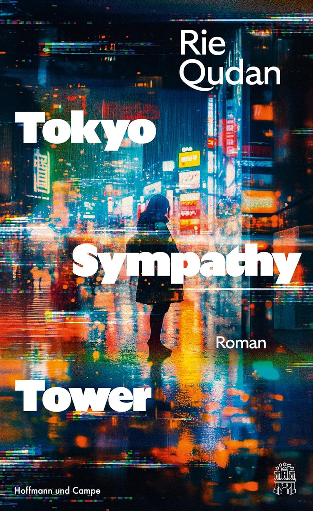

Tokyo Sympathy Tower
Der Roman spielt mit Counterfactuals und spielt zum Teil in der nahen Zukunft. Die renommierte Architektin Sara Machina entwirft den Tokio Sympathy Tower, der als modernes Gefängnis mit einem revolutionären Konzept dienen soll. Dabei werden die Verbrecher nicht mehr als Verbrecher behandelt, sondern können abgeschieden von der realen Welt ein sorgenfreies Leben führen und sinnvollen Beschäftigungen und Hobbies nachgehen. Es geht ihnen so gut, dass sie nie mehr aus dem Turm herauswollen.
Aber im Roman geht es vor allem um die Befindlichkeit der Architektin, die den Turm im Gesamtzusammenhang mit dem von Zaha Hadids Olympiastadion ein harmonisches Ensemble bilden soll. In Realität wurde das Stadion eben nicht gebaut, im Buch aber schon. Sie sieht den Bau als Lebensaufgabe, obwohl sie sich nicht wirklich mit dem Gefängniskonzept auseinandersetzt, gegen das es immer wieder Proteste bis zu Todesdrohungen an die Architektin gibt. Sie ist mit Haut und Haaren Architektin. Nachdem der Bau vollendet ist, sieht sie ihre Aufgabe als erledigt an und hört auf zu arbeiten.
Der Roman fesselt auf eine Art, verstört andererseits auch, auch wenn nicht wirklich viel passiert.
ISBN: 978-3455019346